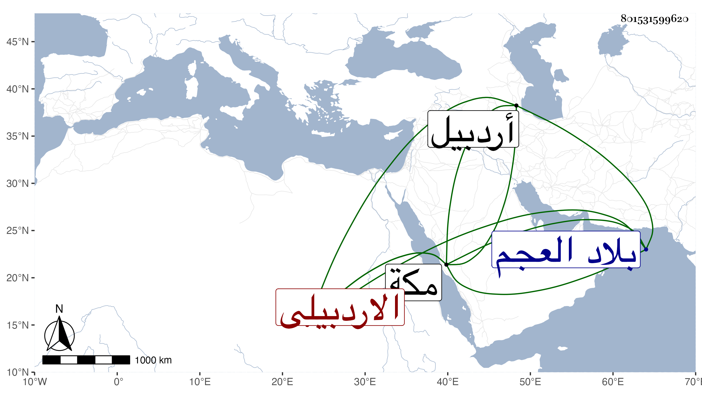

0902Sakhawi.DawLamic.ITO20230111-ara1.EIS1600.801531599620
Biography ID: 801531599620
226
زينب ابنة إبراهيم بن أحمد بن محمد بن أحمد الاردبيلى . ولدت بمكة وأمها عائشة ابنة دانيال ونشأت بها فلما بلغت أو كادت توجهت إلى بلاد العجم مع عمها فزوجها في بلده اردبيل بولده وأقامت بها أزيد من عشرين سنة وولدت له هناك فخر الدين ثم رجعت إلى مكة وتزوجت بها الشمس بن النجم الصوفي ورزقت منه عائشة الآتية . وتوفيت في شوال أو ذي القعدة سنة ست عشرة . ذكرها الفاسي .
